July –th, 2021¶
Motivation: Cleanup SVINET results, showcase plotting functions
# HIDE CODE
import os
import sys
import nibabel as nib
import networkx as nx
from time import time
from pprint import pprint
from copy import deepcopy as dc
from os.path import join as pjoin
from myterial import orange, blue_grey
from IPython.display import display, IFrame, HTML
from matplotlib.colors import rgb2hex, to_rgb
import matplotlib.pyplot as plt
import seaborn as sns
# set style & no interpolalation
import matplotlib
matplotlib.rcParams['image.interpolation'] = 'none'
sns.set_style('whitegrid')
# tmp & extras dir
git_dir = pjoin(os.environ['HOME'], 'Dropbox/git')
tmp_dir = pjoin(git_dir, 'jb-Ca-fMRI/tmp')
extras_dir = pjoin(git_dir, 'jb-Ca-fMRI/_extras')
svinet_ws = pjoin(os.environ['HOME'], 'Documents/workspaces/svinet')
# GitHub
sys.path.insert(0, pjoin(git_dir, 'Ca-fMRI'))
from register.atlas import load_allen, make_tree_graph
from register.parcellation import Parcellation
from analysis.hierarchical import Hierarchical
from analysis.svinet import *
from utils.plotting import *
from utils.render import *
from model.mouse import Mice
from model.configuration import Config
# warnings
import warnings
warnings.filterwarnings('ignore', category=DeprecationWarning)
Mice & Net¶
mice = Mice(Config(256))
mice.combine_dfs('rest')
key = 'sub-SLC'
metric = 'spearman'
mode = 'bold'
net = Network(
mice=mice,
key=key,
metric=metric,
mode=mode,
percentiles=np.linspace(50, 10, 5).astype(int),
binarize=False,
).fit()
SVINET¶
perc = 20
num_comm = 5
expt_name = next(k for k in net.graphs if f"p{perc}" in k)
- either: load fits¶
start = time()
svinet = SVINET(
net=net,
num_k=num_comm,
expt_name=expt_name,
match_metric='cosine',
load_kws='linksampling',
).load_resuts()
end = time()
convert_time(end - start)
current expt name: 'bold_spearman_sub-SLC_n256_p30'
[PROGRESS] loading 'k6-cosine-linksampling-(2021_07_14)' from '/home/hadi/Documents/Ca-fMRI/processed/norm-global_parcel-spatial-sym_n-256/results/SVINET/b old_spearman_sub-SLC_n256_p30'
[PROGRESS] process results: done
[PROGRESS] 942 results loaded
00 - 00:00:15 (dd - hh:mm:ss)
os.listdir(svinet.path)
['centrality_plots', 'perf.df', 'figs', 'render', 'result.npy', 'pi_cut.df']
svinet.path.split('/')
[ '', 'home', 'hadi', 'Documents', 'Ca-fMRI', 'processed', 'norm-global_parcel-spatial-sym_n-256', 'results', 'SVINET', 'bold_spearman_sub-SLC_n256_p30', 'k6-cosine-linksampling-(2021_07_14)' ]
len(svinet.get_result_dict())
942
- or: fit¶
start = time()
svinet = SVINET(
net=net,
num_k=num_comm,
expt_name=expt_name,
match_metric='cosine',
load_kws='linksampling',
).load_runs(svinet_ws).fit(repeats=1)
end = time()
convert_time(end - start)
current expt name: 'bold_spearman_sub-SLC_n256_p20'
some runs with k != 5 were excluded: 16 x k = 4
[PROGRESS] experiment loaded: 'bold_spearman_sub-SLC_n256_p20', total # runs: 9984
[PROGRESS] fit: initiated
[PROGRESS] kmeans fit: done
[PROGRESS] find best mappings: done
[PROGRESS] results aligned: done
[PROGRESS] membership df: done
[PROGRESS] 'result.npy' saved at /home/hadi/Documents/Ca-fMRI/processed/norm-global_parcel-spatial-sym_n-256/results/SVINET/bo ld_spearman_sub-SLC_n256_p20/k5-cosine-linksampling-(2021_07_14)
[PROGRESS] 'perf.df' saved at /home/hadi/Documents/Ca-fMRI/processed/norm-global_parcel-spatial-sym_n-256/results/SVINET/bo ld_spearman_sub-SLC_n256_p20/k5-cosine-linksampling-(2021_07_14)
[PROGRESS] 'pi_cut.df' saved at /home/hadi/Documents/Ca-fMRI/processed/norm-global_parcel-spatial-sym_n-256/results/SVINET/bo ld_spearman_sub-SLC_n256_p20/k5-cosine-linksampling-(2021_07_14)
[PROGRESS] process results: done
[PROGRESS] fit: done!
00 - 00:03:44 (dd - hh:mm:ss)
scores = svinet.pi_symmetry_score()
np.mean(list(scores.values())), scores
(0.9031666666666668, {1: 0.976, 2: 0.818, 3: 0.973, 4: 0.798, 5: 0.97, 6: 0.884})
svinet.entropy_score()
0.876
_ = svinet.plot_performance()
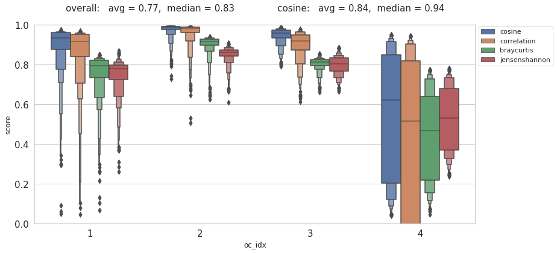
_ = svinet.plot_communities_2d(disjoint=True)
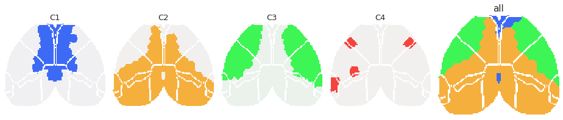
_ = svinet.plot_memberships_2d()
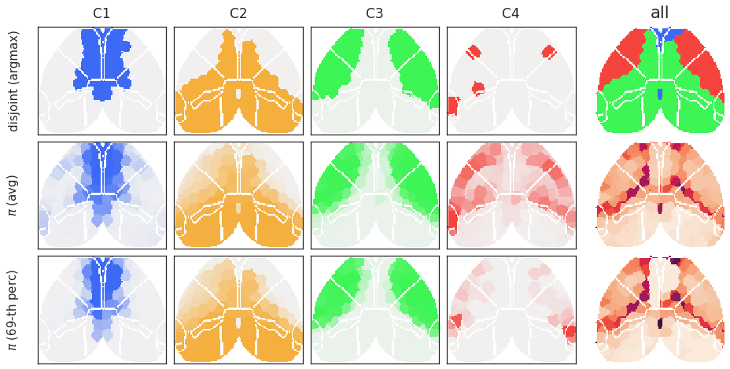
_ = svinet.plot_memberships('bar')
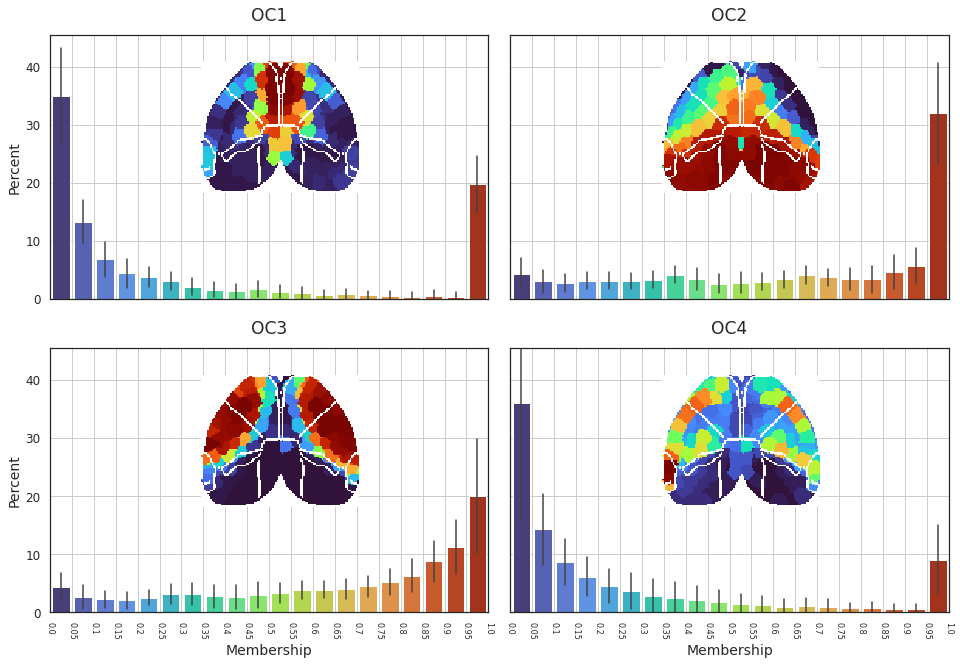
_ = svinet.plot_memberships('box')
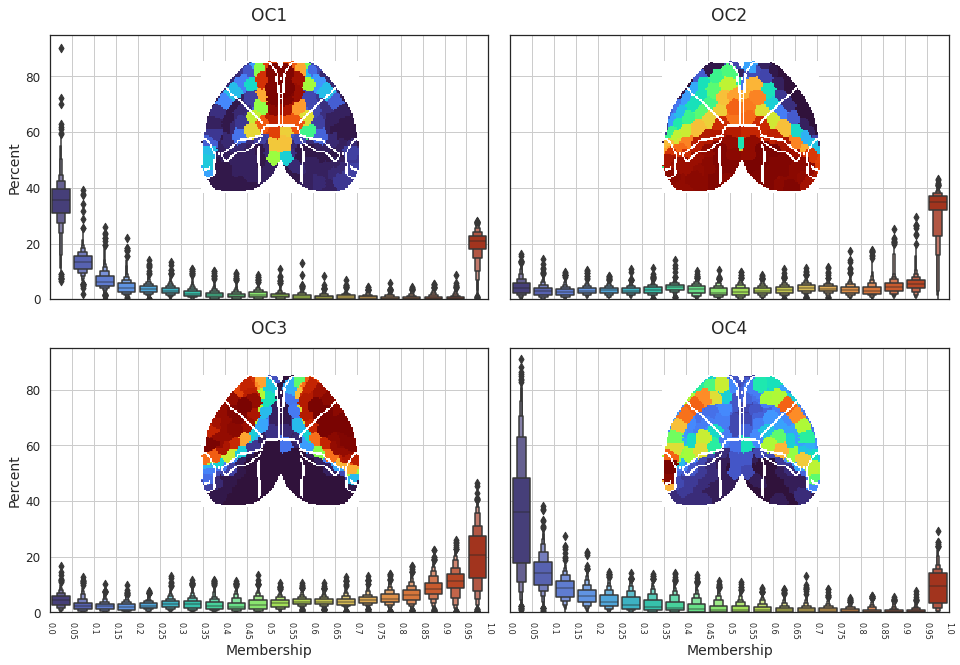
_ = svinet.plot_membership_heatmap(ytick_labelsize=9)
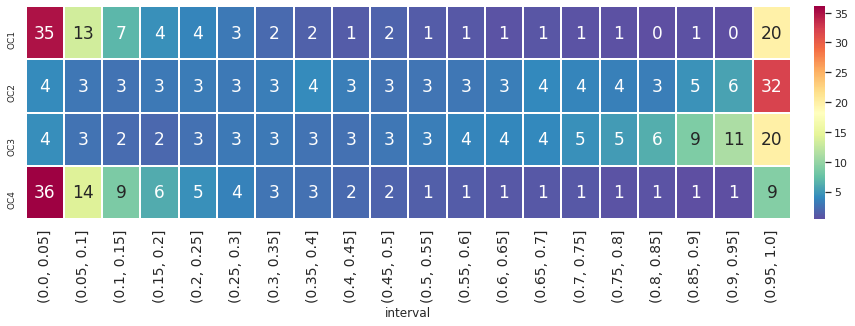
svinet.clusters
| STR |
| ||||||||
| PAL |
| ||||||||
| OLF |
| ||||||||
| CTXsp |
| ||||||||
| HPF |
| ||||||||
| VIS |
| ||||||||
| TEa |
| ||||||||
| PERI |
| ||||||||
| ECT |
| ||||||||
| RSP |
| ||||||||
| AUD |
| ||||||||
| PTLp |
| ||||||||
| VISC |
| ||||||||
| SS |
| ||||||||
| SSp |
| ||||||||
| SSp-bfd |
| ||||||||
| SSp-ll |
| ||||||||
| SSp-m |
| ||||||||
| SSp-n |
| ||||||||
| SSp-tr |
| ||||||||
| SSp-ul |
| ||||||||
| SSp-un |
| ||||||||
| SSs |
| ||||||||
| GU |
| ||||||||
| ACA |
| ||||||||
| AI |
| ||||||||
| MO |
| ||||||||
| MOp |
| ||||||||
| MOs |
| ||||||||
| ILA |
| ||||||||
| PL |
| ||||||||
| ORB |
| ||||||||
| FRP |
|
svinet.render(cortex_only=True)
svinet.render(cortex_only=False)
Scene saved at /home/hadi/Documents/Ca-fMRI/processed/norm-global_parcel-spatial-sym_n-256/re sults/SVINET/bold_spearman_sub-SLC_n256_p30/k6-cosine-linksampling-(2021_07_14)/render/overla p_cortex_k6.html
Scene saved at /home/hadi/Documents/Ca-fMRI/processed/norm-global_parcel-spatial-sym_n-256/re sults/SVINET/bold_spearman_sub-SLC_n256_p30/k6-cosine-linksampling-(2021_07_14)/render/disjoi nt_cortex_k6.html
Scene saved at /home/hadi/Documents/Ca-fMRI/processed/norm-global_parcel-spatial-sym_n-256/re sults/SVINET/bold_spearman_sub-SLC_n256_p30/k6-cosine-linksampling-(2021_07_14)/render/overla p_brain_k6.html
Scene saved at /home/hadi/Documents/Ca-fMRI/processed/norm-global_parcel-spatial-sym_n-256/re sults/SVINET/bold_spearman_sub-SLC_n256_p30/k6-cosine-linksampling-(2021_07_14)/render/disjoi nt_brain_k6.html
# fig, axes = svinet.plot_memberships_2d(cortex_only=False)
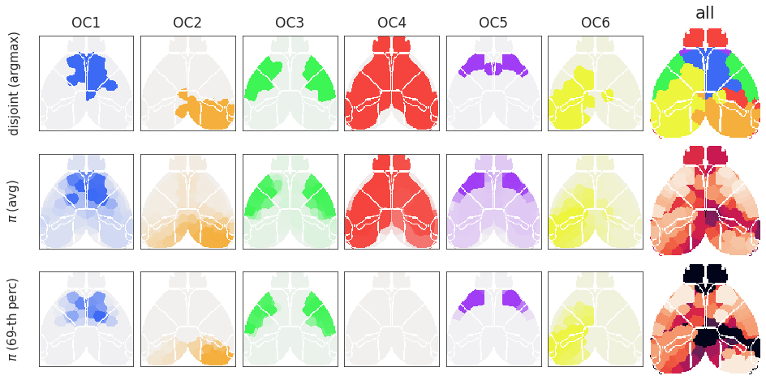
scores = svinet.pi_symmetry_score()
np.mean(list(scores.values())), scores
(0.954, {1: 0.97, 2: 0.963, 3: 0.975, 4: 0.928, 5: 0.934})
Entropy¶
svinet.entropy_score()
0.931
selected_measures = [
'degree_w',
'closeness',
'betweenness_w',
'eigenvector_w',
]
cent_df = net.centralities[svinet.expt_name]
cent_df = cent_df.loc[cent_df.measure.isin(selected_measures)]
cent_df = pd.concat([
pd.DataFrame({
'name': [svinet.expt_name] * len(svinet.h),
'measure': ['entropy'] * len(svinet.h),
'node': range(len(svinet.h)),
'centrality': svinet.h, }),
cent_df,
])
cent_df = pd.concat([cent_df, pd.DataFrame(columns=['oc_idx'])], axis=1)
partition = {n: i + 1 for n, i in enumerate(np.argmax(svinet.pi, axis=0))}
for n, idx in partition.items():
cent_df.loc[cent_df.node == n, 'oc_idx'] = idx
_df = cent_df.groupby(['node', 'measure']).mean().unstack()
_df = _df.centrality
_df = pd.concat([_df, pd.DataFrame({'oc_idx': partition})], axis=1)
collections.Counter(_df.oc_idx).most_common()
[(3, 111), (2, 91), (1, 43), (5, 18), (4, 3)]
svinet.num_k
5
sns.set_theme(style='whitegrid', palette='deep')
save_dir = svinet.get_save_path('centrality_plots')
pg = sns.pairplot(
data=_df,
hue='oc_idx',
markers=['o', 'X', 'P', 's', 'D'] ,# 'p'],
palette=svinet.colors,
plot_kws={'alpha': 0.8, 's': 60, 'edgecolor': 'dimgrey'},
)
pg.map_lower(
func=sns.kdeplot,
levels=50,
color=".2",
fill=True,
alpha=0.6,
)
file = pjoin(save_dir, 'pair.pdf')
pg.savefig(file, bbox_inches='tight')
plt.show()
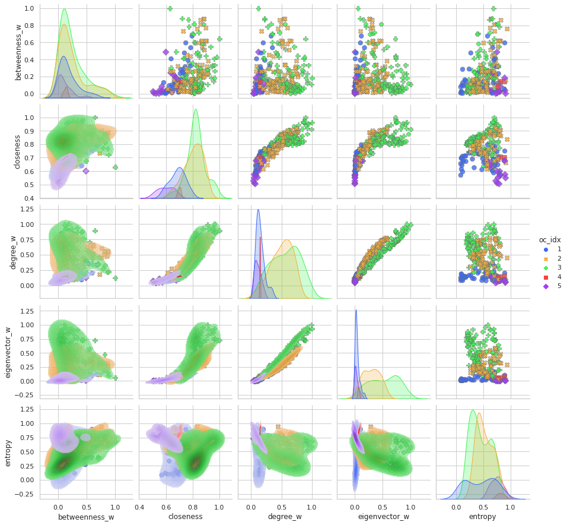
selected_measures = [
'degree',
'degree_w',
'betweenness',
'betweenness_w',
'eigenvector',
'eigenvector_w',
'closeness',
]
cent_df = net.centralities[svinet.expt_name]
cent_df = cent_df.loc[cent_df.measure.isin(selected_measures)]
cent_df = pd.concat([
pd.DataFrame({
'name': [svinet.expt_name] * len(svinet.h),
'measure': ['entropy'] * len(svinet.h),
'node': range(len(svinet.h)),
'centrality': svinet.h, }),
cent_df,
])
cent_df = pd.concat([cent_df, pd.DataFrame(columns=['oc_idx'])], axis=1)
partition = {n: i + 1 for n, i in enumerate(np.argmax(svinet.pi, axis=0))}
for n, idx in partition.items():
cent_df.loc[cent_df.node == n, 'oc_idx'] = idx
_df = cent_df.groupby(['node', 'measure']).mean().unstack()
_df = _df.centrality
_df = pd.concat([_df, pd.DataFrame({'oc_idx': partition})], axis=1)
sns.set_theme(style='white', palette='deep')
save_dir = svinet.get_save_path('centrality_plots')
all_measures = cent_df.measure.unique().tolist()
all_measures.remove('entropy')
for measure in all_measures:
_df = cent_df.loc[cent_df.measure.isin([measure, 'entropy'])]
_df = _df.groupby(['node', 'measure']).mean().unstack()
_df = _df.centrality
jg = sns.JointGrid(
data=_df,
x='entropy',
y=measure,
space=0,
)
jg.plot_joint(
sns.kdeplot,
fill=True,
clip=((0, 1), (0, 1.0)),
thresh=0.,
levels=20,
gridsize=200,
cmap="rocket",
)
jg.plot_marginals(
sns.histplot,
color='#03051A',
alpha=0.8,
bins=40,
)
jg.ax_joint.axvline(
x=np.median(svinet.h),
ls=':',
lw=0.8,
alpha=1.0,
c=sns.color_palette('deep')[-1],
label=f"entropy median: {np.median(svinet.h):.2f}",
)
jg.ax_joint.legend(loc='upper left', prop={'size': 8})
file = pjoin(save_dir, f"{measure}_density.pdf")
jg.savefig(file)
plt.close()
sns.set_theme(style='white', palette='deep')
save_dir = svinet.get_save_path('centrality_plots')
all_measures = cent_df.measure.unique().tolist()
all_measures.remove('entropy')
for measure in all_measures:
_df = cent_df.loc[cent_df.measure.isin([measure, 'entropy'])]
_df = _df.groupby(['node', 'measure']).mean().unstack()
_df = _df.centrality
_df = pd.concat([_df, pd.DataFrame({'oc_idx': partition})], axis=1)
jg = sns.JointGrid(
data=_df,
x='entropy',
y=measure,
hue='oc_idx',
size=8,
palette=svinet.colors,
xlim=(0, 1),
ylim=(0, 1),
space=0.0,
)
jg.plot_joint(
sns.scatterplot,
hue='oc_idx',
s=180,
alpha=0.9,
edgecolor='dimgrey',
)
jg.plot_marginals(
sns.kdeplot,
fill=True,
alpha=0.5,
lw=2,
)
jg.ax_joint.axvline(
x=np.median(svinet.h),
ls='--',
lw=2,
alpha=1.0,
c=sns.color_palette('deep')[7],
label=f"entropy median: {np.median(svinet.h):.2f}",
zorder=0,
)
jg.ax_joint.legend(loc='upper left', prop={'size': 9})
file = pjoin(save_dir, f"{measure}_scatter.pdf")
jg.savefig(file)
plt.close()
sns.set_theme(style='white', palette='deep')
save_dir = svinet.get_save_path('centrality_plots')
all_measures = cent_df.measure.unique().tolist()
all_measures.remove('entropy')
for measure in all_measures:
_df = cent_df.loc[cent_df.measure.isin([measure, 'entropy'])]
_df = _df.groupby(['node', 'measure']).mean().unstack()
_df = _df.centrality
_df = pd.concat([_df, pd.DataFrame({'oc_idx': partition})], axis=1)
jg = sns.JointGrid(
data=_df,
x='entropy',
y=measure,
hue='oc_idx',
size=8,
palette=svinet.colors,
xlim=(0, 1),
ylim=(0, 1),
space=0.0,
)
jg.plot_joint(
sns.histplot,
bins=30,
alpha=0.9,
)
jg.plot_marginals(
sns.kdeplot,
fill=True,
alpha=0.5,
)
jg.ax_joint.axvline(
x=np.median(svinet.h),
ls='--',
lw=2,
alpha=1.0,
c=sns.color_palette('deep')[7],
label=f"entropy median: {np.median(svinet.h):.2f}",
)
jg.ax_joint.legend(loc='upper left', prop={'size': 9})
file = pjoin(save_dir, f"{measure}_histogram.pdf")
jg.savefig(file)
plt.close()
svinet.prepare_plot_material(cortex_only=True)
cent_vec = {
m: {
region: cent_df.loc[cent_df.measure == m, 'centrality'].values[n]
for n, region in svinet.net.n2l.items()
} for m in cent_df.measure.unique()
}
cent_vol = vec2vol(cent_vec, net.mice)
if svinet.plot_cortex_only:
cent_vol = {
idx: v * net.mice.allen['isocortex_mask']
for idx, v in cent_vol.items()
}
list(cent_vol)
[ 'entropy', 'degree_w', 'degree', 'eigenvector', 'eigenvector_w', 'closeness', 'betweenness', 'betweenness_w' ]
fig, axes = create_figure(1, len(cent_vol), (13.5, 5))
sns.set_theme(style='white', palette='deep')
save_dir = svinet.get_save_path('centrality_plots')
for ax, (k, m) in zip(axes, cent_vol.items()):
cent_arr = project_vol_2d(
vol_data={k: m},
dims_flat=net.mice.allen['dims_flat'],
mode='max_proj',
)
if svinet.plot_cortex_only:
mask = svinet.net.mice.parcel.results2d['parcel']
else:
mask = svinet.net.mice.parcel.results2d['atlas']
cent_arr = svinet._trim(cent_arr, mask)
data2plt = np.ma.masked_where(svinet.contour2d, cent_arr)
ax.imshow(data2plt, cmap='flare_r')
ax.set_title(k, fontsize=14, y=1.05)
remove_ticks(axes)
file = pjoin(save_dir, f"centralities_2d.pdf")
fig.savefig(file, bbox_inches='tight')
plt.show()
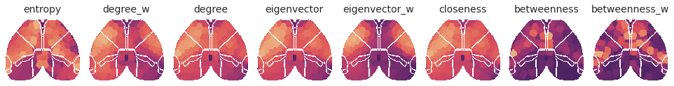
svinet.path.split('/')[-3:]
[ 'SVINET', 'bold_spearman_sub-SLC_n256_p30', 'k5-cosine-linksampling-(2021_07_14)' ]
js_dist = sp_dist.pdist(svinet.pi.T, metric='jensenshannon')
js_dist = sp_dist.squareform(js_dist)
js_sim = 1 - js_dist
community = {
idx: [net.l2n[region] for region in x]
for idx, x in svinet.disjoint_community().items()
}
low_thres = np.quantile(svinet.h, 0.1)
high_thres = np.quantile(svinet.h, 0.9)
dict_list = []
for i, j, data in net.graphs[svinet.expt_name].edges(data=True):
c_i = next(idx for idx, x in community.items() if i in x)
c_j = next(idx for idx, x in community.items() if j in x)
link = 'within' if c_i == c_j else 'across'
if svinet.h[i] > high_thres:
entropy_i = 'high'
elif svinet.h[i] < low_thres:
entropy_i = 'low'
else:
entropy_i = 'mid'
if svinet.h[j] > high_thres:
entropy_j = 'high'
elif svinet.h[j] < low_thres:
entropy_j = 'low'
else:
entropy_j = 'mid'
if entropy_i == entropy_j:
entropy = entropy_i
else:
entropy = '-'.join(sorted([entropy_i, entropy_j]))
data_dict = {
'i': [i],
'j': [j],
'c_i': [c_i],
'c_j': [c_j],
'link': [link],
'entropy': [entropy],
'weight': [data['weight']],
'js_dist': [js_dist[i, j]],
'js_sim': [js_sim[i, j]],
}
dict_list.append(data_dict)
df = pd.DataFrame(merge_dicts(dict_list))
sns.scatterplot(
data=df,
y='weight',
x='js_sim',
hue='link',
palette={'across': 'r', 'within': 'k'},
alpha=0.8,
)
<AxesSubplot:xlabel='js_sim', ylabel='weight'>
fig, axes = create_figure(2, 3, (13.5, 10), 'ticks', 'all', 'all')
save_dir = svinet.get_save_path('centrality_plots')
for ax, idx in zip(axes.ravel(), range(1, svinet.num_k + 1)):
_df = df.loc[df.c_i == idx]
sns.scatterplot(
data=_df,
y='weight',
x='js_sim',
hue='link',
s=80,
edgecolor=svinet.colors[idx],
palette={'across': 'r', 'within': 'k'},
alpha=0.8,
ax=ax,
)
ax.set_title(f"C{idx}", fontsize=17, y=1.02)
# ax.axhline(net.thresholds[perc])
ax.grid()
trim_axs(axes, svinet.num_k)
file = pjoin(save_dir, 'JS_vs_weight.pdf')
fig.savefig(file, bbox_inches='tight')
plt.show()
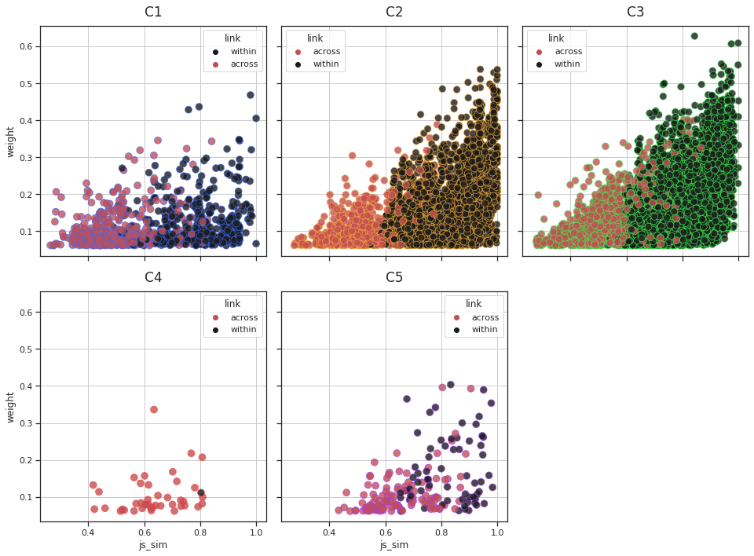
community = {
idx: [net.l2n[region] for region in x]
for idx, x in svinet.disjoint_community().items()
}
dict_list = []
for lbl, f in net._group_centrality_fn.items():
for idx, comm_list in community.items():
data_dict = {
'measure': [lbl],
'oc_idx': [idx],
'centrality': [f(net.graphs[svinet.expt_name], comm_list)],
}
dict_list.append(data_dict)
grp_cent_df = pd.DataFrame(merge_dicts(dict_list))
fig, ax = create_figure(1, 1, (8, 5), 'ticks')
sns.barplot(
data=grp_cent_df,
x='measure',
y='centrality',
hue='oc_idx',
palette=svinet.colors,
saturation=0.7,
ax=ax,
)
plt.show()
_df = grp_cent_df.groupby(['oc_idx', 'measure']).mean().unstack()
_df = _df.centrality
_df
| measure | group_betweenness | group_closeness | group_degree |
|---|---|---|---|
| oc_idx | |||
| 1 | 0.028840 | 0.677778 | 0.524590 |
| 2 | 0.080407 | 0.722628 | 0.646465 |
| 3 | 0.201496 | 0.809524 | 0.764706 |
| 4 | 0.074770 | 0.748538 | 0.695312 |
| 5 | 0.014117 | 0.583333 | 0.323308 |
| 6 | 0.007198 | 0.627551 | 0.406504 |
a = np.quantile(svinet.h, 0.25)
b = np.quantile(svinet.h, 0.75)
a, b
(0.41991571836164504, 0.7364948448404033)
low_ent = np.where(svinet.h < a)[0]
high_ent = np.where(svinet.h > b)[0]
svinet.h[low_ent].mean(), svinet.h[high_ent].mean()
(0.3180719123365593, 0.7909467492327872)
dict_list = []
for lbl, f in net._group_centrality_fn.items():
for tag, group in {'low': low_ent, 'high': high_ent, }.items():
data_dict = {
'measure': [lbl],
'tag': [tag],
'centrality': [f(net.graphs[svinet.expt_name], group)],
}
dict_list.append(data_dict)
grp_cent_df = pd.DataFrame(merge_dicts(dict_list))
fig, ax = create_figure(1, 1, (6, 4), 'ticks')
sns.barplot(
data=grp_cent_df,
x='measure',
y='centrality',
hue='tag',
palette='tab10',
saturation=0.7,
ax=ax,
)
plt.show()

high_ent = [
mice.parcel.results['eroded_masks'][int(net.n2l[n].split('-')[-1])]
for n in high_ent if str(315) in net.n2l[n]
]
low_ent = [
mice.parcel.results['eroded_masks'][int(net.n2l[n].split('-')[-1])]
for n in low_ent if str(315) in net.n2l[n]
]
mask_high_ent = functools.reduce(np.logical_or, high_ent)
mask_low_ent = functools.reduce(np.logical_or, low_ent)
_ = parcel2html(
masks={0: mask_high_ent},
save_dir=extras_dir,
save_name='high_entropy',
cmap=sns.light_palette('C3', as_cmap=True, reverse=True),
alpha=0.8,
alpha_base=0.2,
alpha_root=0.1,
)
Scene saved at /home/hadi/Dropbox/git/jb-Ca-fMRI/_extras/high_entropy_k1.html
_ = parcel2html(
masks={0: mask_low_ent},
save_dir=extras_dir,
save_name='low_entropy',
cmap=sns.light_palette('C0', as_cmap=True, reverse=True),
alpha=0.8,
alpha_base=0.2,
alpha_root=0.1,
)
Scene saved at /home/hadi/Dropbox/git/jb-Ca-fMRI/_extras/low_entropy_k1.html
import networkx.algorithms.community as nx_comm
nx.group_degree_centrality()
a = 'degree'
b = 'eigenvector'
_df = cent_df.loc[cent_df.measure.isin([a, b])]
_df = _df.groupby(['node', 'measure']).mean().unstack()
_df = _df.centrality
x = _df.loc[:, a].values.reshape(-1, 1)
y = _df.loc[:, b].values.reshape(-1, 1)
lm = LinearRegression().fit(x, y)
fig, ax = create_figure(1, 1)
sns.regplot(
data=_df,
x=a,
y=b,
ax=ax,
)
ax.set_aspect(1 / ax.get_data_ratio())
ax.set_title(f"r = {lm.coef_.item():.2f}")
ax.set_xlabel(a)
ax.set_ylabel(b)
plt.show()
Compare centroids and memship_vol (old stuff)¶
fig, axes = create_figure(3, 1, (13.5, 6), 'white')
data = {
'centroids': svinet.centroids,
'pi': svinet.pi,
'pi_median':np.median(svinet.pi_all, axis=0),
}
for ax, (lbl, x) in zip(axes, data.items()):
im = ax.imshow(x, cmap='Spectral_r', aspect=3.4, vmin=0, vmax=1)
ax.set_title(lbl)
remove_ticks(axes)
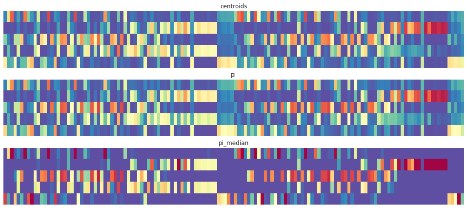
def snr_plot(arrs, labels, sort: bool = False, sort_idx: int = 0):
data = dict(zip(labels, arrs))
ncols, nrows = len(data), 1
fig, axes = create_figure(
ncols,
nrows,
(13, 2 * ncols),
'white',
'col',
tight_layout=False,
constrained_layout=True,
)
for i, (ax, (lbl, x)) in enumerate(zip(axes, data.items())):
cmap = sns.cubehelix_palette(
start=i,
rot=.7,
dark=0.0,
light=0.95,
reverse=True,
as_cmap=True,
)
if sort:
x = [
np.reshape([
e for _, e in
sorted(zip(arrs[sort_idx][j], x[j]))
], (1, -1))
for j in range(num_comm)
]
x = np.concatenate(x)
im = ax.imshow(x, vmin=0, cmap=cmap)
plt.colorbar(im, ax=ax, pad=0.01)
ax.set_title(lbl, fontsize=14, y=1.02)
ax.set(
xticks=range(0, x.shape[1], 10),
yticks=range(len(x)),
yticklabels=[f"oc_{i}" for i in range(1, len(x)+1)],
aspect=0.12 / ax.get_data_ratio(),
)
if sort:
ax.set_xlabel('')
else:
ax.set_xlabel('nodes', fontsize=14)
plt.show()
pi_mu = np.mean(svinet.pi_all, axis=0)
pi_var = np.var(svinet.pi_all, axis=0)
snr = pi_mu ** 2 / np.maximum(pi_var, np.finfo(float).eps)
arrs = (pi_mu, pi_var, snr)
labels = (r'$\mu$', r'$\sigma^2$', r'SNR = $\frac{\mu^2}{\sigma^2}$')
snr_plot(arrs, labels)

arrs = (pi_mu, pi_var, snr)
labels = (r'$\mu$', r'$\sigma^2$', r'SNR = $\frac{\mu^2}{\sigma^2}$')
snr_plot(arrs, labels, sort=True, sort_idx=0)
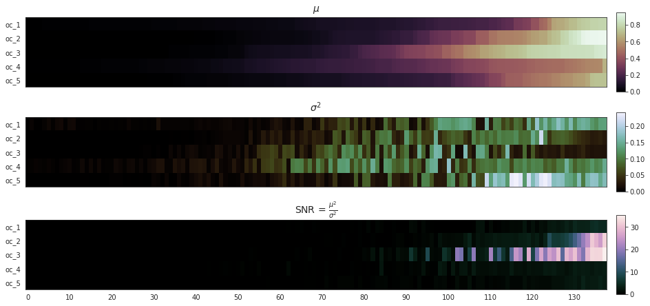
fig, axes = create_figure(3, 2, (13.5, 16), 'whitegrid', 'all', 'all')
for i, ax in zip(range(num_comm), axes.ravel()):
for j, (lbl, x) in enumerate(data.items()):
if lbl == 'centroids':
continue
ax.plot(x[i], color=f"C{j}", label=lbl, lw=1.7)
ax.legend()
trim_axs(axes, num_comm)
plt.show()

_ = svinet.plot_communities_2d(True)

bad = []
for idx, (i, j, k) in enumerate(zip(
np.argmax(data['pi'], axis=0),
np.argmax(data['pi_median'], axis=0),
np.argmax(data['centroids'], axis=0), )):
if not (i==k):
bad.append(idx)
print(idx, (i, j, k))
4 (2, 2, 3)
16 (2, 3, 3)
51 (1, 3, 3)
57 (1, 3, 3)
Save for next time¶
mice = Mice(Config(512))
mice.combine_dfs('rest')
key = 'sub-SLC'
metric = 'spearman'
mode = 'bold'
net = Network(
mice=mice,
key=key,
metric=metric,
mode=mode,
binarize=False,
).fit()
net.save_graphs(svinet_ws)
edge list 'bold_spearman_sub-SLC_n512_p30.txt' saved at /home/hadi/Documents/workspaces/svinet/bold_spearman_sub-SLC_n512_p30
edge list 'bold_spearman_sub-SLC_n512_p25.txt' saved at /home/hadi/Documents/workspaces/svinet/bold_spearman_sub-SLC_n512_p25
edge list 'bold_spearman_sub-SLC_n512_p20.txt' saved at /home/hadi/Documents/workspaces/svinet/bold_spearman_sub-SLC_n512_p20
edge list 'bold_spearman_sub-SLC_n512_p15.txt' saved at /home/hadi/Documents/workspaces/svinet/bold_spearman_sub-SLC_n512_p15
edge list 'bold_spearman_sub-SLC_n512_p10.txt' saved at /home/hadi/Documents/workspaces/svinet/bold_spearman_sub-SLC_n512_p10